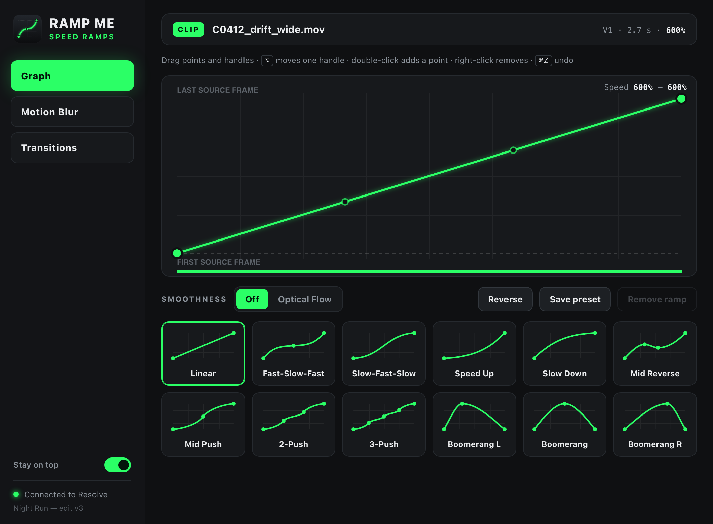

12 ready curves
Fast-slow-fast, speed up, slow down, pushes, mid reverse and boomerangs. One click applies one.
A plugin for DaVinci Resolve Studio. Pick a curve and it retimes the clip under your playhead. The clip keeps its length and its first and last frame. Only the speed inside changes.
Free · macOS · Tested on Resolve Studio 21
Live demo
This is the plugin's own interface, running on a sample clip. Click a preset, drag the points, switch tabs. Nothing here touches Resolve.

The demo needs a wider screen. Above is a still of the graph editor.
Features
Fast-slow-fast, speed up, slow down, pushes, mid reverse and boomerangs. One click applies one.
Drag points and handles and the clip updates as you go. Undo per clip, save your own presets.
Speed the clip up first, say to 600%. The slow stretches of a ramp then land near 100% and show real frames, not stretched ones.
One switch turns on Fusion's optical flow for smooth in-between frames when you need them.
Zoom or directional blur over an adjustment clip. It fades in and out, peaking at the start, middle or end.
Shake, warp, chromatic aberration and glow across a cut, each with its own strength.
How it works
Use Retime Controls (⌘R) so the clip fits the beat, for example at 600%.
Ramp Me always works on the clip under the red playhead. The window stays on top of Resolve.
The ramp lands right away. Tweak it in the graph, or put an adjustment clip over the cut for blur and effects.
Resolve's scripting can't change clip speed, so Ramp Me builds a Fusion TimeStretcher inside the clip with a keyframed source time. The edit page speed is applied after Fusion, so your timeline length and in and out points never move. Your own Fusion nodes stay where they are.
Install
git clone https://github.com/grozoww/ramp-me.git
cd ramp-me
scripts/install.shRestart Resolve, then open Workspace → Workflow Integrations → Ramp Me.
git pull and run the script again.